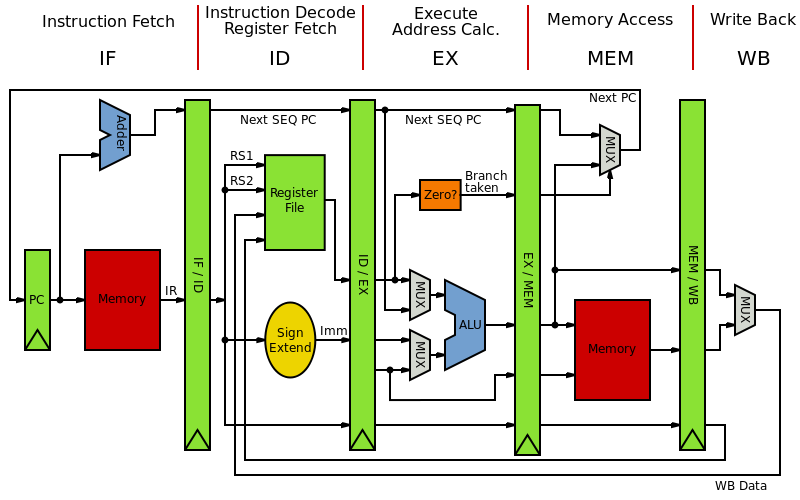
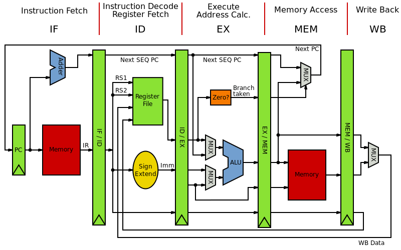

Used Logisim, an educational tool for designing and simulating digital logic circuits to construct a pipelined 32-bit two-cycle processor from scratch. The project was partitioned into four independent subsections, which were eventually combined in the final design.
The initial task was to build an functioning Arithmetic and Logic Unit (ALU), which could execute 27 basic instructions given inputs. The Instruction Set Architecture was based loosely off of MIPS. Next, we constructed a simple register handler, which could perform reads and writes to the ISA's 32 registers. Thirdly, we put together the Data Memory. The final task was to integrate the aforementioned three elements and control logic (including pipelining) into the finished central processing unit.
Unfortunately, due to university policy, the finished product may not be revealed here. I instead attached a highly simplified diagram of the CPU design, and have linked the MIPS instruction set. This is probably the school project from which I've learned most, and I plan to enroll in CS150 (Components and Design Techniques for Digital Systems) in the upcoming semesters to keep up the learning!
The initial task was to build an functioning Arithmetic and Logic Unit (ALU), which could execute 27 basic instructions given inputs. The Instruction Set Architecture was based loosely off of MIPS. Next, we constructed a simple register handler, which could perform reads and writes to the ISA's 32 registers. Thirdly, we put together the Data Memory. The final task was to integrate the aforementioned three elements and control logic (including pipelining) into the finished central processing unit.
Unfortunately, due to university policy, the finished product may not be revealed here. I instead attached a highly simplified diagram of the CPU design, and have linked the MIPS instruction set. This is probably the school project from which I've learned most, and I plan to enroll in CS150 (Components and Design Techniques for Digital Systems) in the upcoming semesters to keep up the learning!